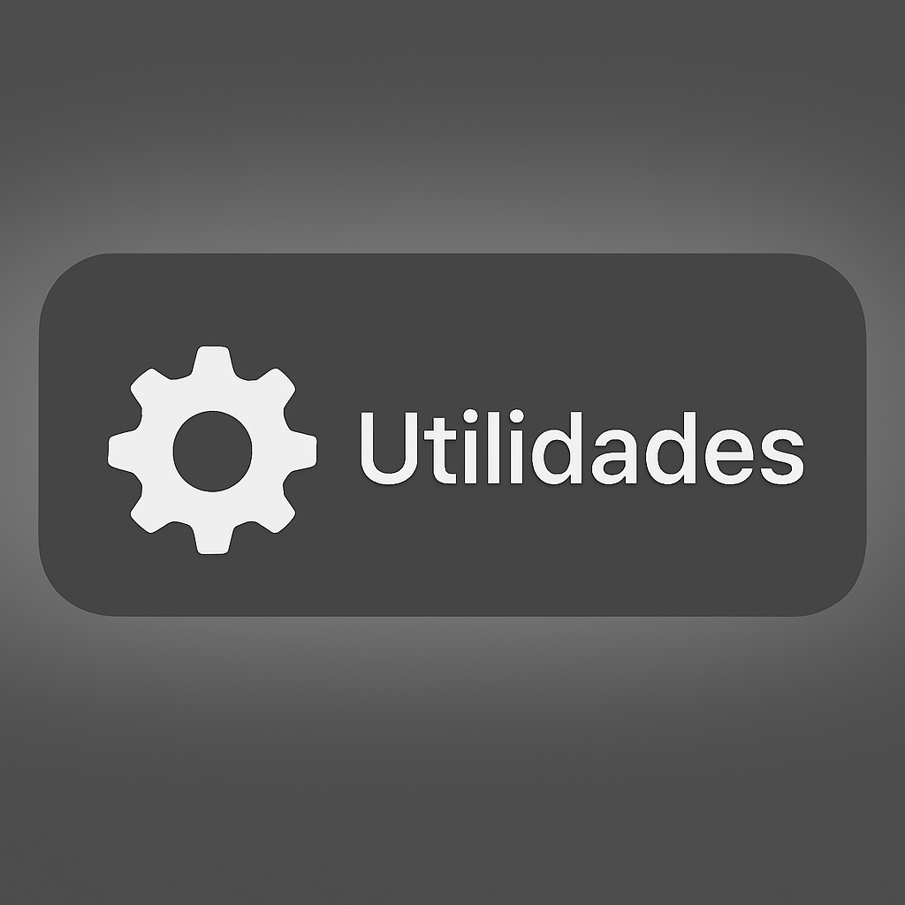
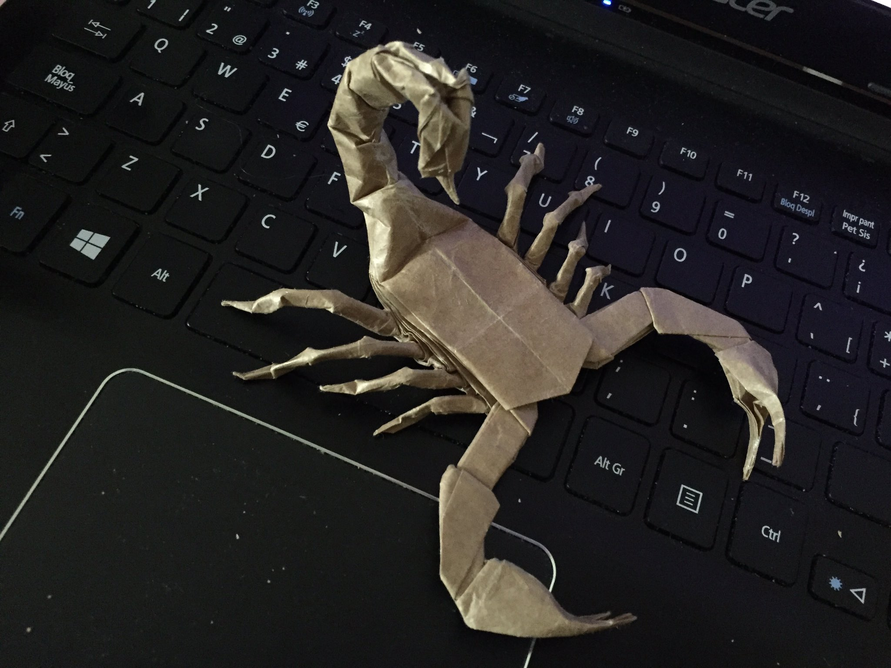

Veterinario internista de Pequeños Animales | Doctor en Veterinaria | Autor de la App MnemoVetDDx
Doctor en Veterinaria por la Universidad Complutense de Madrid (UCM) con experiencia en Medicina Interna de Pequeños Animales. Desarrollador de la aplicación móvil MnemoVetDDx
Actividad profesional: Veterinario clínico de Medicina Interna general en el Hospital Clínico Veterinario de la UCM.
Experiencia en diagnóstico electrocardiográfico y radiológico a distancia a través de la plataforma CARDIOVET®.Publicación de más de 70 artículos científicos y colaboración en libros sobre Cardiología, Electrocardiografía, Urgencias y Cuidados Intensivos.
¿Tienes alguna idea? ¡Contáctame y la desarrollaremos juntos! Saldrás en los créditos y te regalaré una figura de papiroflexia como agradecimiento.

Este código genera un cuadrado con los puntos de referencia basados en el diagrama de plegado del escorpión diseñado por Robert Lang y permite ajustar su tamaño.
Para contactarme, haz clic en el siguiente enlace para abrir tu cliente de correo:
También puedes encontrarme en LinkedIn .